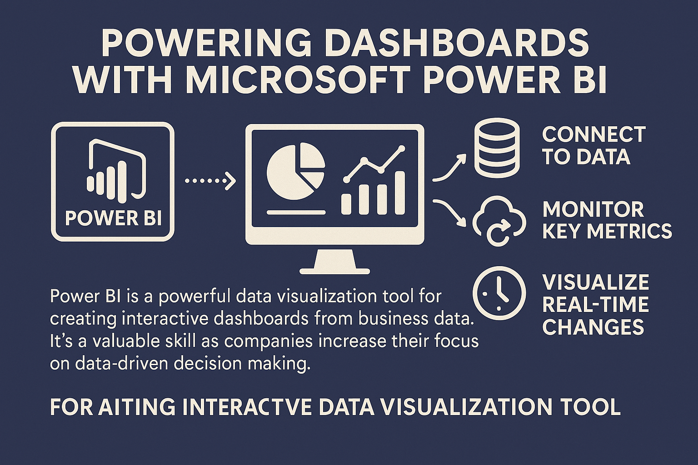

Power BI is a powerful data visualization tool that helps turn raw business data into actionable insights. It allows you to connect to various data sources, transform and model that data, and create interactive dashboards to monitor key metrics.
Why Power BI Matters:
- Business Intelligence: Transform complex data into clear, actionable visuals
- Data Integration: Connect to SQL databases, Excel, cloud services, and APIs
- Real-time Monitoring: Track KPIs and metrics as they update
- Collaboration: Share insights across teams with interactive reports
- Custom Visualizations: Tailor dashboards to specific stakeholder needs
Power BI is a powerful data visualization tool that helps turn raw business data into actionable insights. It allows you to connect to various data sources, transform and model that data, and create interactive dashboards to monitor key metrics. The beauty of Power BI is how it brings technical and non-technical stakeholders together with visuals that tell a compelling story.
Key Capabilities:
- Data Sources: Support for 100+ connectors including Azure, SQL Server, Excel, Google Analytics, and more
- Data Transformation: Power Query for cleaning, shaping, and preparing data
- DAX Formulas: Create custom calculations and measures
- Interactive Dashboards: Drill-down, filter, and compare data with user controls
- Mobile Support: View reports on tablets and phones with responsive design
Integrating Power BI with databases or cloud services lets teams visualize real-time changes, enabling better decision-making. As businesses become more data-driven, the ability to build impactful dashboards with Power BI becomes an essential skill.